← Back to CS184 home
CS184/284A Spring 2025 Homework 1 Write-Up
Harry Lu
Link to webpage:
harrylu.github.io/cs184.github.io/hw1/
Link to GitHub repository:
github.com/cal-cs184-student/hw1-rasterizer-harry
Overview
In Homework 1, I implemented a rasterizer that can rasterize triangles. I started by drawing single-color triangles before extending it to support interpolated color triangles, textured triangles, and supersampling. I worked with transforms and barycentric coordinates and implemented different sampling methods for texture mapping on the "pixel" and "level" scales.
I found thinking about how best to rasterize the triangle and using barycentric coordinates very interesting. I had to think of a good way to break down the problem into smaller parts and develop an algorithm that would work regardless of winding order. Modifying it to work with supersampling also added an interesting challenge.
Task 1: Drawing Single-Color Triangles
To rasterize a triangle, I loop through all the pixels in the bounding box of the triangle and check if the point is inside the triangle. If it is, I set the pixel color to the color of the triangle.
My algorithm checks each sample within the bounding box of the triangle, so it is no worse asymptotically than any other algorithm that does the same.
|
Triangles rasterized with single color.
|
Task 2: Antialiasing by Supersampling
I increase the size of the pixel buffer to include enough space for the supersampled pixels.
My supersampling algorithm works by splitting each pixel into a grid of subpixels and checking if the point is inside the triangle. If it is, I set the subpixel color to the color of the triangle.
Then, I average the colors of the subpixels to get the color of the pixel.
I use supersampling to get a more accurate color for the pixel, which helps with antialiasing by reducing jaggies.
|
Triangles rasterized with supersample of 1.
|
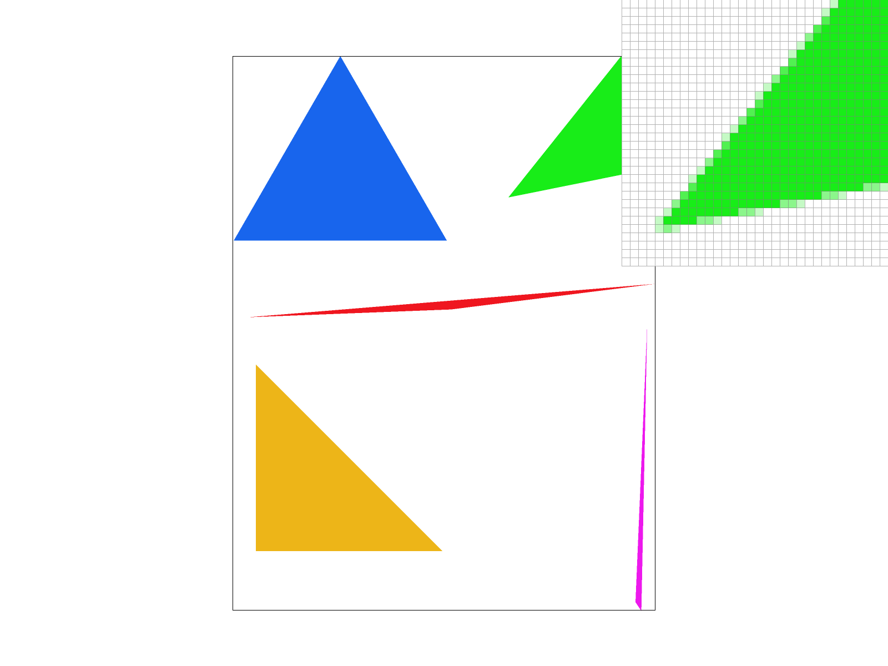
Triangles rasterized with supersample of 4.
|
|
Triangles rasterized with supersample of 9.
|
Triangles rasterized with supersample of 16.
|
We can see that higher supersampling leads to smoother edges and less jaggies. This is because the subpixels are averaged to get the color of the pixel.
Task 3: Transforms
I added an extra feature to the GUI to allow for rotation of the viewport. This feature allows me to press [ and ] to rotate the viewport left and right. I added an extra step between SVG -> NDC and NDC -> Screen to allow for the rotation. This step applies a translation to the SVG to the center of the screen, a rotation, and a translation back to the original position.
Cubeman!
|
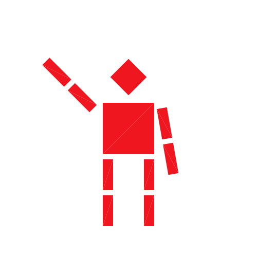
Cubeman is waving!
|
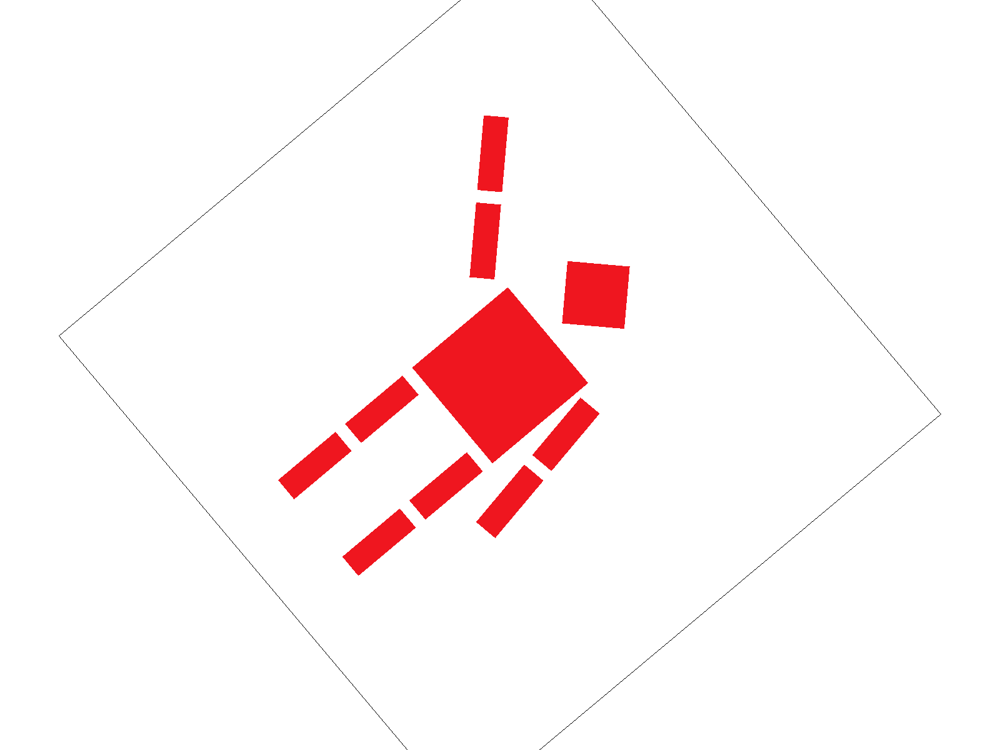
Cubeman is rotated and waving!
|
Task 4: Barycentric coordinates
Barycentric coordinates are a way to represent a point in a triangle using sort of weights on the vertices. The sum of the weights is 1 and so it is a sort of interpolation between the vertices.
|
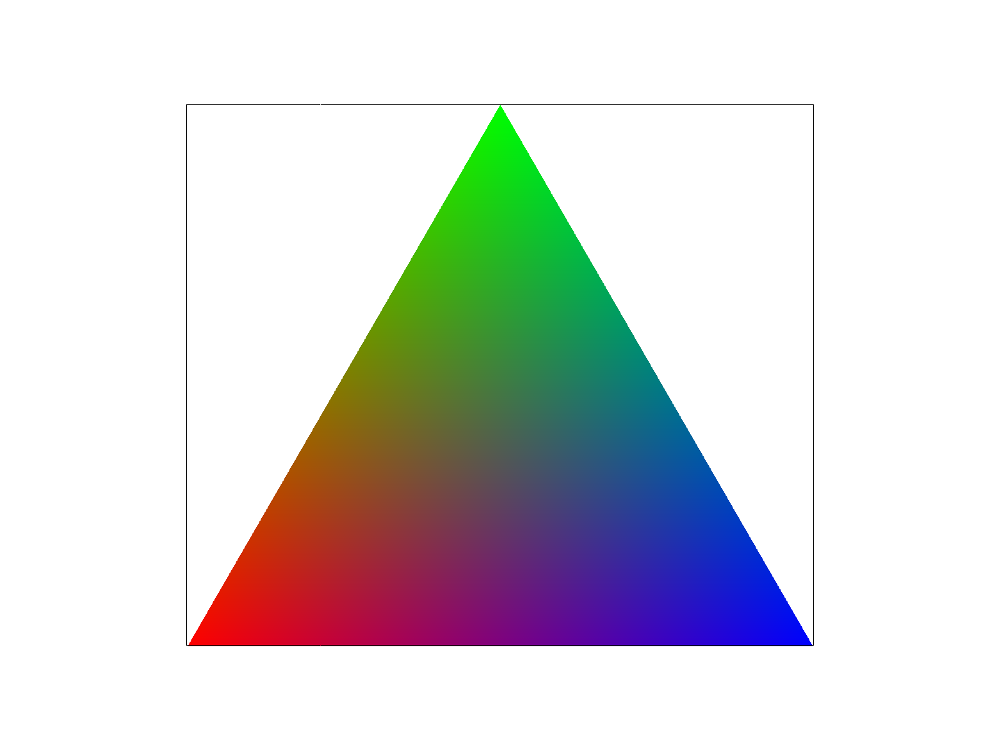
Triangle interpolated with barycentric coordinates.
|
This triangle has a red, blue, and green vertex. We can see that the interior of the triangle is a mix of the three colors, weighted by the barycentric coordinates. Intuitively, barycentric coordinates show how close a point is to the other vertices. It does this by computing the area of the triangle formed by the point and the vertices and normalizing it by the area of the triangle.
|
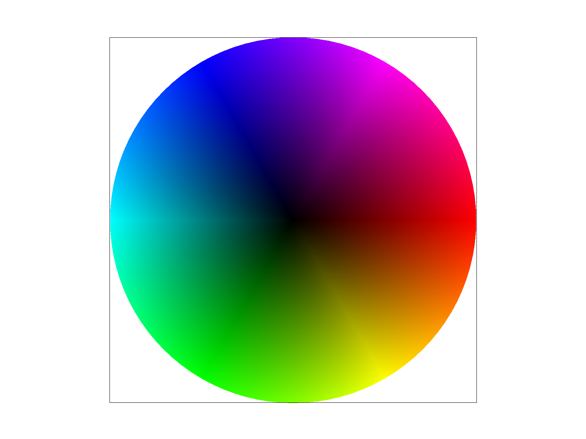
Color wheel showing color gradient.
|
Task 5: "Pixel sampling" for texture mapping
Pixel sampling is a way to sample a texture at a given pixel. The different sampling methods arise from a mismatch between the resolution of the texture and the resolution of the pixel. I implemented pixel sampling by checking if the point is inside the triangle and then sampling the texture at the point using barycentric coordinates and interpolating between the uv coordinates of the vertices.
I implemented two sampling methods: nearest and bilinear. Nearest sampling samples the texture at the nearest pixel to the point. Bilinear sampling samples the texture at the four nearest pixels and interpolates between them.
|
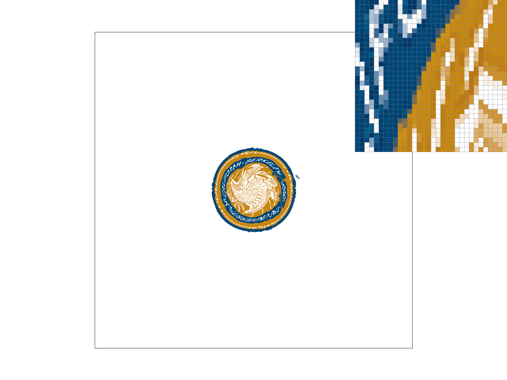
Nearest sampling with supersample of 1.
|
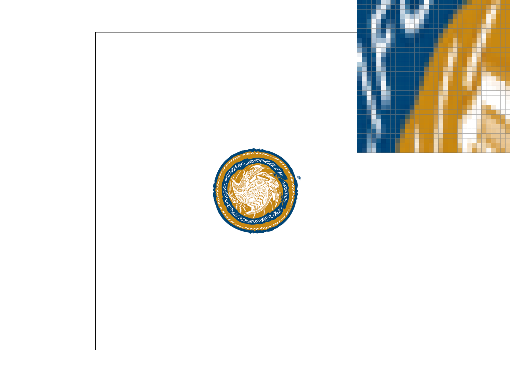
Nearest sampling with supersample of 16.
|
|
Bilinear sampling with supersample of 1.
|
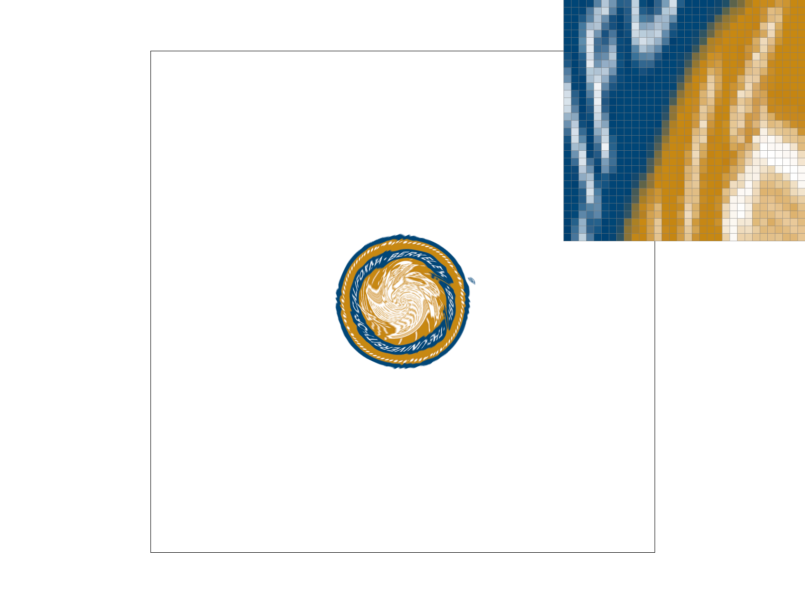
Bilinear sampling with supersample of 16.
|
We can see that bilinear sampling gives a smoother result than nearest sampling. This is because the original image has pretty sharp edges and fast transitions between colors. In this case, bilinear sampling serves to smooth out the edges and colors.
Task 6: "Level Sampling" with mipmaps for texture mapping
Level sampling is a way to sample a texture at a given level. The different levels arise from a mismatch between the resolution of the texture and the resolution of the screen. Levels depend on the distance of the texture from the camera. For further away textures, we want to use a lower resolution texture to avoid aliasing.
I implemented level sampling by computing the level of the texture at the point using the distance from the camera to the point and how fast the texture uv coordinates change relative to screen space.
I then sampled the texture at the given level.
For L_LINEAR, I sampled the texture at the two nearest levels and interpolated between them.
There are some tradeoffs to consider when choosing between pixel sampling methods. Nearest sampling is faster and simpler, but it can be aliased. Bilinear sampling is slower, but it gives a smoother result.
These also apply to level sampling. L_ZERO is the fastest and simplest, but it can be aliased. L_LINEAR requires more storage of mipmaps, but it gives a smoother result. L_LINEAR requires more computation, but it gives a smoother result.
Pixel supersampling has a very straightforwards tradeoff. Higher supersampling leads to smoother edges and less jaggies, but is much more computationally expensive.
|
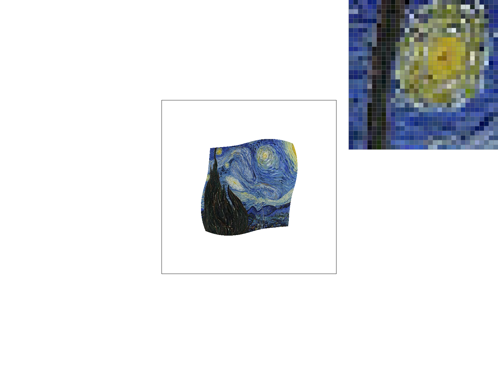
L_ZERO with nearest sampling.
|
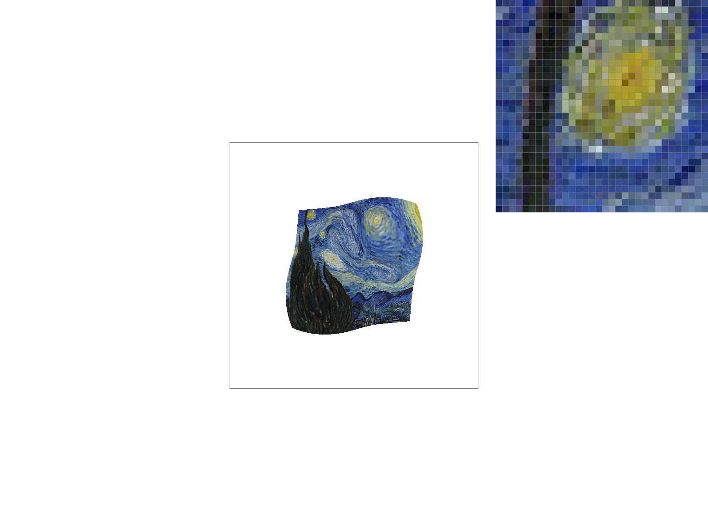
L_ZERO with bilinear sampling.
|
|
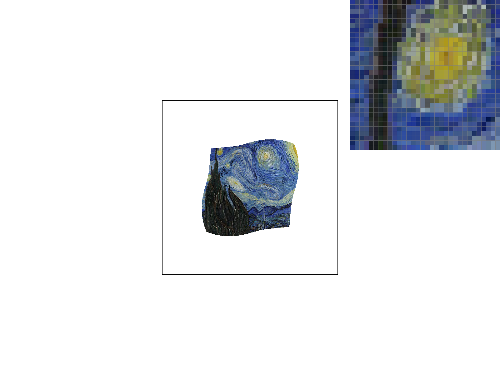
L_NEAREST with nearest sampling.
|
L_NEAREST with bilinear sampling.
|